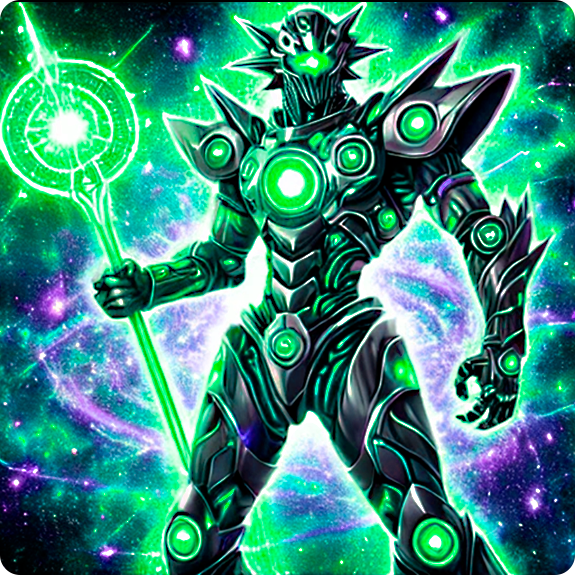

-
Slifer, o Dragão Celeste
[Besta Divina/ Efeito]
Requer 3 Tributos para ser Invocado por Invocação-Normal (não pode ser Baixado Normalmente). A Invocação-Normal deste card não pode ser negada. Quando Invocado por Invocação-Normal, cards e efeitos não podem ser ativados. Uma vez por turno, durante a Fase Final, se este card foi Invocado por Invocação-Especial: envie-o para o Cemitério. Ganha 1000 de ATK/DEF para cada card na sua mão. Se um ou mais monstros forem Invocados por Invocação-Normal ou Especial no campo do seu oponente em Posição de Ataque: esses monstros perdem 2000 de ATK e, depois, se algum deles tiver o ATK reduzido a 0 como resultado, destrua-o.
ATK/ ? DEF/ ? -
Obelisco, o Atormentador
[Besta Divina/ Efeito]
Requer 3 Tributos para ser Invocado por Invocação-Normal (não pode ser Baixado Normalmente). A Invocação-Normal deste card não pode ser negada. Quando Invocado por Invocação-Normal, cards e efeitos não podem ser ativados. Não pode ser alvo de Magias, Armadilhas ou efeitos de card. Durante a Fase Final, se este card foi Invocado por Invocação-Especial: envie-o para o Cemitério. Você pode oferecer 2 monstros como Tributo; destrua todos os monstros que seu oponente controla. Este card não pode declarar um ataque no turno em que este efeito for ativado.
ATK/ 4000 DEF/ 4000 -
O Rei Caveira
Um demônio com poderes das trevas para confundir os inimigos. Entre os monstros do tipo demônio, é dos mais fortes. (Este card deve ser sempre considerado como um card "Arquidemônio".)
ATK/ 2500 DEF/ 1200 -
Mechadragon X, o Destruidor Biomecânico

Uma fusão mortal de biologia dracônica e engenharia cibernética, Mechadragon X foi criado para ser uma arma definitiva. Com suas asas energizadas e múltiplos núcleos de poder, ele é capaz de disparar rajadas devastadoras e neutralizar até os mais fortes adversários. Sua presença no campo de batalha é um presságio de destruição iminente, conhecido como o "Fim das Eras".
ATK/ 3500 DEF/ 3000 -
Archmage Stellarion, o Guardião das Estrelas

Um mago enigmático que manipula as forças do cosmos para proteger o equilíbrio universal. Archmage Stellarion utiliza seu Cetro Cósmico para canalizar feitiços de luz estelar, podendo banir inimigos para dimensões distantes ou fortalecer aliados com energia astral. Sua presença no campo de batalha é envolta em mistério e poder, sendo reverenciado como o "Sábio do Infinito".
ATK/ 2400 DEF/ 2600 -
Aegis Knight, o Guardião do Firmamento
Vestindo uma armadura forjada com fragmentos de estrelas, Aegis Knight é o defensor final das dimensões. Empunhando a Espada Astral e o Escudo Celestial, ele possui o poder de anular ataques inimigos e contra-atacar com golpes de pura energia cósmica. Seu juramento é proteger o equilíbrio entre luz e trevas, sendo lembrado como a "Fortaleza do Cosmos".
ATK/ 3000 DEF/ 2800 -
Stormbringer Dragon, o Arauto das Tempestades

Este poderoso dragão domina os céus, invocando trovões e relâmpagos com o bater de suas asas. Stormbringer Dragon é a personificação da fúria da natureza, destruindo tudo em seu caminho com rajadas elétricas e ventos cortantes. Diz-se que sua aparição é o prelúdio de uma tempestade sem fim, trazendo destruição e renovação aos campos de batalha.
ATK/ 2900 DEF/ 2100